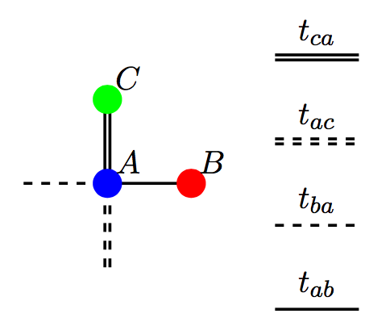
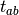
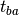
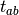
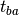
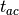
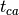
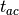
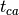

Tight-Binding Lieb
Motivations
liebTB is a module providing a Python implementation of a face centered square lattice within the tight-binding framework. It can be used to build up and solve tight-binding models with complex valued onsite energies and/or hoppings. As such, this package can be used to analyze the concepts of Parity-Time symmetry, Parity-Time symmetry breaking, zero-modes, and topologically protection.
The lattice is defined by:
- three sublattices named A, B and C. The unit cell is given by:

four hoppings:
- In the
 direction: the intradimer coupling  which links the A sites to the B sites, and the interdimer hopping  which links the B sites to the A sites.
direction: the intradimer coupling  which links the A sites to the B sites, and the interdimer hopping  which links the B sites to the A sites.
- In the
 direction: the intradimer coupling  which links the A sites to the B sites, and the interdimer hopping  which links the C sites to the A sites.
direction: the intradimer coupling  which links the A sites to the B sites, and the interdimer hopping  which links the C sites to the A sites.
liebTB can
- obtain the spectrum (eigenenergies of the tight-binding Hamiltonian) and the probability densities of the states of the system (absolute value squared eigenvectors of the Hamiltonian).
- obtain the polarization of the A sublattice (the sum of the probability densities of the A sites)
- select states by introducing a condition on the A sublattice polarization (revealing zero modes and/or localized states).
- test the robustness to disorder by implementing hopping disorder.
- get the time evolution of the field (using the Crank-Nicolson method).
- get the time evolution of the field with adiabatic pumping (smooth variation of the hoppings).
Feedback
Please send comments or suggestions for improvement to cpoli83 at hotmail dot fr